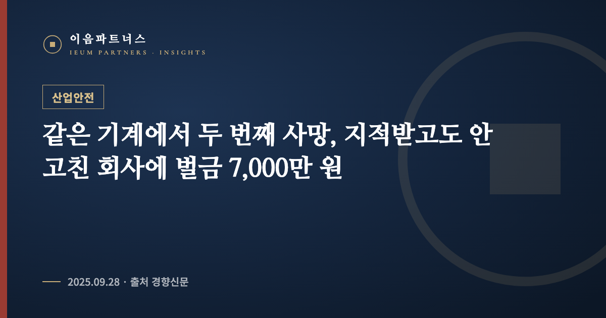

같은 기계에서 두 번째 사망, 지적받고도 안 고친 회사에 벌금 7,000만 원

한 플라스틱 제조업체에서 압출기를 정비하던 50대 노동자가 기계에 끼어 숨진 사건으로, 1심 법원이 대표에게 징역 1년 6월·집행유예 2년을, 회사에는 벌금 7,000만 원을 선고했습니다. 같은 공장에서는 2021년 7월에도 같은 작업 중 같은 방식의 사망 사고가 있었습니다. 대표님 회사는 예전 사고나 외부 점검에서 지적받은 사항을 실제로 고쳤고, 고친 기록이 남아 있습니까? 이 글에서는 사건 내용과 판결, 지금 확인할 점을 정리합니다.
이번 판결은 1심 판결이라 항소 여부에 따라 결론이 달라질 수 있습니다. 다만 한 번 지적받은 위험을 그대로 두었다가 같은 사고가 되풀이된 사건이어서, 업종과 규모를 가리지 않고 참고할 만합니다. 우리 회사 설비 점검과 개선 기록이 걱정되신다면 카카오톡 채널 이음파트너스로 편하게 물어 주세요.
어떤 사고였나
2024년 6월 11일, 이 업체에서 일하던 50대 노동자가 압출기(플라스틱 원료를 녹여 밀어내는 기계) 정비 작업 중 기계에 몸이 끼어 숨졌습니다(경향신문). 대표는 재해 예방에 필요한 안전보건 관리체계를 갖추지 않고, 필요한 안전조치도 하지 않은 혐의로 기소됐습니다.
이 공장에서는 2021년 7월에도 압출기 정비 중 노동자가 기계에 끼어 숨졌습니다. 당시 사고 뒤 한 재해예방 기관은 “압출기 안전문이 열릴 경우 기계가 작동되지 않도록 작업 전에 확인해 끼임 사고를 예방하기 바란다”고 지적했지만, 회사는 관련 개선 절차를 밟지 않은 것으로 조사됐습니다(경향신문). 사실상 같은 원인으로 두 사람이 목숨을 잃은 것입니다.
법원은 어떻게 판단했나
| 구분 | 내용 |
|---|---|
| 법원 | 수원지방법원 형사5단독(1심) |
| 혐의 | 중대재해처벌법 위반(산업재해치사)·산업안전보건법 위반·업무상과실치사 |
| 대표 | 징역 1년 6월·집행유예 2년 |
| 회사 | 벌금 7,000만 원 |
| 유리하게 본 사정 | 피해자 측과 합의, 범행을 인정하고 반성 |
재판부는 안전조치나 재해 예방에 필요한 조치를 하지 않아 노동자를 숨지게 했다며 죄질이 좋지 않다고 봤습니다. 다만 피해자 측과 합의했고 잘못을 인정하며 반성한 점을 유리한 사정으로 참작해 집행유예를 선고했습니다.
기사는 같은 원인으로 두 명이 숨졌는데도 합의를 이유로 실형을 피한 것은 처벌이 가볍다는 지적을 피하기 어렵다고 짚었습니다. 같은 법원의 다른 재판부도 별도의 중대재해 사건에서 합의 뒤 선처가 되풀이되는 관행을 끊어야 한다고 밝힌 바 있습니다(경향신문).
합의했다고 끝나는 것은 아닙니다
이 사건에서 합의는 형량을 정할 때 참작됐을 뿐, 유죄 판단 자체를 바꾸지는 않았습니다. 대표는 유죄, 회사는 벌금형을 선고받았습니다. 사고가 되풀이된 사업장이라면 앞선 사고 뒤 무엇을 고쳤는지가 먼저 확인될 수 있으니, 지적 사항마다 누가 언제 어떻게 조치했는지 기록으로 남겨 두시길 권합니다.
대표님이 지금 확인할 것
- 예전 사고나 외부 점검에서 지적받은 사항을 목록으로 정리하고, 항목마다 조치 내용과 날짜가 적혀 있는지
- 정비·청소처럼 기계를 열고 하는 작업 전에 안전문이 열리면 기계가 멈추는지 확인하는 절차가 있고, 현장에서 실제로 지키는지
- 같은 설비에서 사고가 난 적이 있다면 원인과 재발 방지 대책을 문서로 남겼는지
- 재해 예방을 위한 안전보건 관리체계를 갖추고 정기적으로 점검하는지
참고한 자료
- 노동자 잇따라 죽어도···유가족과 합의만 하면 ‘집행유예’? — 경향신문 (2025.09.28)
설비 점검 기록과 지적 사항 관리를 함께 정리하고 싶으시다면 카카오톡 채널 이음파트너스로 편하게 문의해 주세요.
※ 이 글은 일반적인 정보 제공을 위한 것으로, 개별 사안은 세무사·노무사 등 전문가와 함께 확인하시기 바랍니다.